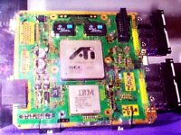
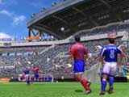
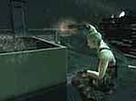

Las patentes de software sólo benefician a las grandes empresas. |
 |
|
|
|
Nintendo 64 Game Boy N. GAMECUBE Game Boy Advance |
|
|
|
Playstation Playstation 2 |
|
|
| Dreamcast |
|
Juegos de Moda |
|
Pokém. Snap(N64) RE Code Vero. (DC) S.Smash Bros (N64) Power Stone 2 (DC) Zelda:M.'s M. (N64) Phantasy S.O. (DC) F. Fantasy IX (PS) Sonic Adv. 2 (DC) Pokémon St. (N64) |
|
Otras Secciones |
|
Colaboraciones Actualizaciones Ant. Noticias Ant. Encuestas Ant. |
|
E-Mail
|
| Noticias Anteriores | |
Sí, señores y señoras, Playstation 2, la sucesora de la ya mítica Playstation, ya a llegado a Europa y, por tanto, a España.  Desde hoy "ya os podeis hacer" con una unidad de la nueva consola de Sony dispuesta a volver a revolucionar los videojuegos en todo el mundo. Bueno, a decir verdad,
pongo entre comillas el "ya os podeis hacer" porque es en el supuesto de que encontreis alguna, claro, que será realmente lo más difícil. Pero lo
más significativo es que a partir de ahora se podran enfrentar cara a cara la ya instalada Dreamcast con la recién llegada PS2. ¿Cuál será
la vencedora?. Lo que podemos decir de antemano es que será un duelo histórico.
Desde hoy "ya os podeis hacer" con una unidad de la nueva consola de Sony dispuesta a volver a revolucionar los videojuegos en todo el mundo. Bueno, a decir verdad,
pongo entre comillas el "ya os podeis hacer" porque es en el supuesto de que encontreis alguna, claro, que será realmente lo más difícil. Pero lo
más significativo es que a partir de ahora se podran enfrentar cara a cara la ya instalada Dreamcast con la recién llegada PS2. ¿Cuál será
la vencedora?. Lo que podemos decir de antemano es que será un duelo histórico.Un anuncio... diferente. (24/11/00) Diferente por no decir feo es el nuevo spot televisivo con el que Sony ha comenzado la campaña para dar a conocer su nueva y querida consola PS2 en España. En el anuncio salen diferentes conceptos que no me atrevo a definir. En todo caso puedo afirmar que en una escena sale un pato con un traje hablando (en su complicada lengua). Se pagará por bonos. (24/11/00) El sistema de facturación de internet para conectarte y jugar al Phantasy Star Online de DC no será ni mucho menos el convencional, como en todos los otros casos, sinó que funcionará por un sistema de bonos por dias de conexión. Habran bonos de 30 o 60 dias con sus respectivos precios. Eso es en el caso de Japón, aquí esta aún por confirmar pero todo apunta a que el método sea el mismo. Versión especial Resident Evil. (24/11/00) Por la conmemoración de 5 exitosos años de Resident Evil, Capcom ha decidido celebrarlo con un nueva entrega, que será el Code Veronica de DC pero con extras y sorpresas. Lo más destacado de la noticia es que esta versión no sólo saldrá para Dreamcast, sinó que también lo hará para Playstation 2. "El Ojo" de GameCube. (20/11/00)  ATI Technologies, encarga del diseño de la tarjeta gráfica de GameCube, ha enseñado en la feria Comdex 2000 el aspecto final del chip, con el que se podran aplicar efectos como: Niebla, anti-aliasing, alpha bleding, multitextura, filtro bilineal, bump y enviroment mapping, compresión de textura y MIPMAP. Muchas "virguerias", y para los entusiastas de los polígonos, GameCube podrá mover entre 6 y 12 millones por segundo, con texturas y efectos incluido. ¿Perfect Dark para GameCube?. (20/11/00) No es oficial pero muchas publicaciones (algunas cercanas a RARE) hacen eco de una muy posible nueva entrega de Perfect Dark para GameCube. Hay unos cuantos nombres que han surgido para especulación de la prensa. Un candidato es "After Dark", pero hay otros nombres que se dice RARE ha registrado, como "Perfect Dark Evolution" o "Shot in the Dark". Zelda hasta en el móvil. (20/11/00) No, no se ha llegado aún a hacer un juego, pero sí para promocionarse. Nintendo, en su megacampaña para promocionar Zelda: Majora's Mask ha incluido como método de promoción la publicidad a través del móvil. Sí, si tienes entre 15 y 20 años, estas registrado en la web de Bolt y tienes móvil recibirás publicidad del nuevo Zelda de N64. Una de clásicos para N64. (20/11/00) "Midway's Greatest Arcade Hits Volume 1" será el nombre con el que saldrá el cartucho de Midway que pretende reunir 6 juegos que marcaron época en su momento. Los juegos seran: "Sinistar", "Defender", "Root Beer Trapper", "Robotron 2084", "Spy Hunter" y "Joust". Sega apuesta por el pasado. (17/11/00) Según me he enterado Sega planea lanzar una especie de Pack con la Dreamcast + un mando y una serie de juegos de Megadrive para jugarlos en DC: Sonic the Hedgehog, Vectorman, Altered Beast, Golden Axe, Revenge of Shinbo, Streets of Rage 2, Columns, Phantasy Star 2, Shining Force y Wrestle War. El pack se llamará Smash Pack Dreamcast Bundle, tendrá un precio de 179.95$ (equivaldrian a 35.990 ptas) y se harian diferentes versiones con otros juegos de Megadrive. Eso sí, no se sabe si esta promoción llegará a europa o se quedará en USA. "Truquillo" para acelerar el módem de DC. (17/11/00) En EEUU el módem de DC tiene una velocidad de 56k, y la versión europea de 33,6k. Pues bien, el módem europeo en realidad el mismo que el americano, sólo que Sega decidió limitar la velocidad. Pues bien, según circula por la red se puede acelerar el módem de la DC haciendo simplemente este "truquillo": -Accede a la opción AT en el menú de Dreamkey -Introduce el código AT28=56 en la ventana de comando de texto de AT. Y ya esta!!. Yo no he probado este truco, por lo que no se si funciona, pero algunas publicaciones remarcan que gente que lo ha hecho lo confirma. Shenmue cada vez más cerca... (17/11/00) Hace poco más de una semana que ya lo disfrutan en EEUU y aquí ya no falta ni medio mes. El 1 de diciembre saldrá por fin a la venta Shenmue, juego que la mayoría de publicaciones norteamericanas ya se han atrevido a calificar como uno de los mejores de la historia. Lo triste de la noticia es que como muchos ya saben el juego estará en inglés. Dreamcast y PC. (17/11/00) Son rumores, y dicen que Sega estaría diseñando una placa PCI que conectada a un puerto normal de cualquier PC, sería posible jugar a los juegos de Dreamcast en él. Virtua Striker 3 se acerca. (17/11/00)  Se ha programado para la placa Naomi 2 de Sega para las recreativas, pero se ha confirmado que tendrá una versión doméstica para Dreamcast. Una buena noticia para los futboleros que tengan la DC, porque hasta ahora, aparte de haber pocos, no ha aparecido ninguno realmente revolucionario. Otra de fechas. (17/11/00) El 23 de diciembre del 2000 saldrá a la venta en Japón (aquí y en USA, como siempre habrá que esperar un poco más) "The Bouncer", de SquareSoft. Y el 1 de marzo del 2001 ha sido la fecha elegida por Konami para lanzar Zone of Enders (en japón), juego que os recuerdo incluirá una demo de Metal Gear 2. ¡¡¡SÓLO 200.000 UNIDADES de PS2 para toda Europa!!! (16/11/00) Esto es vergonzoso, señores (y señoras, por supuesto), cuando Sony anunció que el 24 de noviembre se pondrían a la venta 500.000 unidades para toda la demanda europea  nos entró la risa. Estamos hablando de TODA EUROPA, donde además la PS2 tiene una demanda, creo, bastante superior a esta cifra. Pues bien, ahora ha anunciado que finalmente no seran las
esperadas, sinó menos: 200.000 unidades para todo el mercado europeo. Parece ser que las causas son las escasas producciones de chips
que estan sufriendo las fábricas encargadas por Sony para la producción de los procesadores. En fin, que si nos quejábamos antes... ¿ahora que?.
Los que sí se van a quejar serán los que la tenian reservada... y a todo esto Sega se frota las manos.
nos entró la risa. Estamos hablando de TODA EUROPA, donde además la PS2 tiene una demanda, creo, bastante superior a esta cifra. Pues bien, ahora ha anunciado que finalmente no seran las
esperadas, sinó menos: 200.000 unidades para todo el mercado europeo. Parece ser que las causas son las escasas producciones de chips
que estan sufriendo las fábricas encargadas por Sony para la producción de los procesadores. En fin, que si nos quejábamos antes... ¿ahora que?.
Los que sí se van a quejar serán los que la tenian reservada... y a todo esto Sega se frota las manos.Dragon Ball vuelve. (16/11/00) Una de las mejores series de animación de la historia volverá en breve (entrados en el 2001) a aparecer en consola. Son Goku y sus colegas protagonizarán nuevos juegos de los que se encargará Infogrames. Las consolas elegidas para este gran "evento" serán posiblemente la Playstation, Playstation 2 y Game Boy Color. Crazy Taxy 2 confirmado para Dreamcast. (16/11/00) Gran Turismo 3 con fecha. (16/11/00) Sony ha dicho de primeras que el juego podría estar listo para el 25 de enero en Japón (en USA un poco más tarde), y además se sabe que la propia Sony esta preparando una campaña publicitaria del juego "a lo grande". Veremos GT3 hasta en la sopa... Lara Croft "se recicla". (16/11/00) Los juegos de Lara Croft para Playstation 2 ya no se llamaran Tomb Raider, Lara se verá como diferente, más definida, y los niveles del juego se descargán enteros desde internet. Baldur's Gate 2 en PS2. (16/11/00) Uno de los mejores juegos de rol para PC, BG2, tendrá su respectiva versión, que llegará a mediados del 2001, para la consola de Sony. Final Fantasy X para PS2 podría retrasarse. (16/11/00) Al parecer Square esta teniendo problemas con la programación del juego para PS2 (uno de los juegos clave), cosa que podría traducirse en un inevitable retraso en el lanzamiento del juego hasta verano del 2001 (en japón), de lo cual Square aún no ha dicho nada al respecto. Rumor Final Fantasy. (16/11/00) Se dice que SquareSoft esta preparando un Final Fantasy con la aparición de los personajes más famosos de toda la saga, aún no se sabe de que irá. ¿Será sólo un rumor? Las versiones Oro y Plata son superventas. (16/11/00) Según Nintendo, hasta ahora se han vendido en el mercado Americano 2,9 millones de copias de los juegos Pokémon Oro y Plata, y eso que aún no han pasado las navidades... los juegos no llegarán al mercado europeo hasta abril del 2001. Tenchu en PS2. (16/11/00) El juego que creóo la escuela del "sigilo" en los juegos, que más tarde explotó Metal Gear, tendrá una versión para PS2. Así lo ha confirmado Activision. Metal Slug X para PS. (16/11/00) La tercera parte denominada como "X" del genial juego de SNK, Metal Slug, verá luz el 25 de enero sólo para Playstation. Operation: Winback se pasa a PS2. (16/11/00) Koei a confirmado que se esta desarrollando una versión del famoso juego de N64 que guarda ciertas similitudes al aclamado Metal Gear para PS2. Metal Gear Solid 2 estará en Xbox. (10/11/00)  Microsoft ha confirmado que el Metal Gear Solid X anunciado para Xbox será el mismo Metal Gear Solid 2: Sons of Liberty previsto para PS2 más algunos extras. Así, MGS 2, el MAYOR baluarte de la consola de Sony no será un título exclusivo de PS2, cosa que al fin y al cabo perjudica aún más a la PS2. El nuevo Zelda de GB. (10/11/00) Nintendo ha desvelado el nombre de la segunda entrega de Zelda para la GBC. El nombre será "The Legend of Zelda: Time & Space" y se dice que se parecerá un poco al "Majora's Mask" de N64. Previsiones de ventas de GBA. (10/11/00) Se dice que Nintendo tiene planeado vender en los 10 primeros dias de la salida al mercado de Game Boy Advance la mágica cifra de La DC no da suficiente. (10/11/00) Sega no esta muy bien económicamente. La aceptación de Dreamcast al mercado ha sido moderada, es decir, no mala pero tampoco muy buena. Y claro, despues de unos cuantos batacazos anteriores Uri Geller y Nintendo. (10/11/00) Uri Geller, el famoso mago doblador de cucharas, ha demandado a Nintendo alegando un "ataque de identad", pues según Uri Geller, Nintendo le ha transformado en un Pokémon llamado Yun Geller (que tambien lleva cucharas). ¿Como acabará este embrollo?. Zelda: Majora's Mask tiene web. (10/11/00) Con la excusa de la salida del juego al mercado americano ha nacido la web de Zelda: Majora's Mask, con un nombre bastante fácil de recordar, por cierto. Su nombre es www.zelda.com. Esta hecha con Flash. |
come.to/videojuegos
videojuegos.come.to